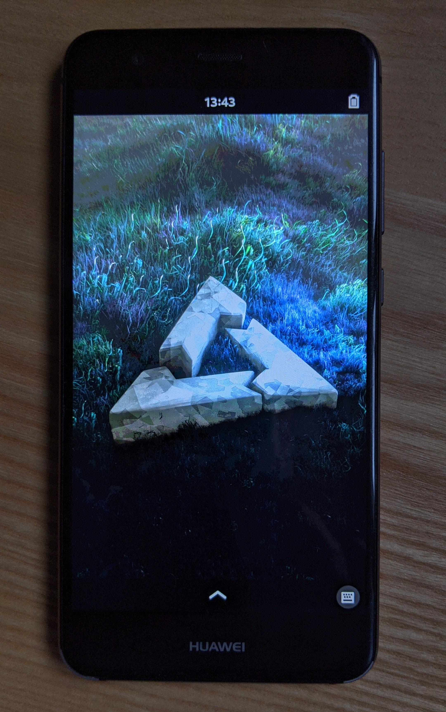

Huawei P10 Lite (huawei-warsaw)
|
 P10 Lite with phosh on framebuffer | |
| Manufacturer | Huawei |
|---|---|
| Name | P10 Lite |
| Codename | huawei-warsaw |
| Released | 2017 |
| Category | testing |
| Original software | Android 7.0 Nougat, EMUI 5.x (upgradable to Android 8.0 Oreo, EMUI 8.x) |
| Hardware | |
| Chipset | HiSilicon Kirin 658 |
| CPU | Octa-core (4x2.1 GHz Cortex-A53 & 4x1.7 GHz Cortex-A53) |
| GPU | Mali-T830MP2 |
| Display | 1080x1920 IPS LCD |
| Storage | 32 GB, microSD up to 256 GB |
| Memory | 4 GB |
| Architecture | aarch64 |
{kind=link}
| USB Networking |
Works
|
|---|---|
| Flashing |
Broken
|
| Touchscreen |
Works
|
| Display |
Works
|
| WiFi |
Works
|
| FDE |
Works
|
| Mainline |
Broken
|
| Battery | |
| 3D Acceleration | |
| Audio | |
| Bluetooth | |
| Camera | |
| GPS | |
| Mobile data | |
| SMS | |
| Calls | |
| USB OTG | |
| NFC | |
| Accelerometer | |
|---|---|
| Magnetometer | |
| Ambient Light | |
| Proximity | |
| Hall Effect | |
| Ir TX | |
|---|---|
| TrustZone | |
Contributors
Maintainer(s)
Users owning this device
How to enter flash mode
With power off, press power und volume-down at the same time, with the usb-cable plugged in.
How to flash
As Huawei changed the partition layout, there is no boot partition anymore. Instead there is a ramdisk and a seperate kernel partition. In order to create the correct images the following steps need to be done:
- Get mkbootimg and unpackbootimg i.e. from here
- You can extract the kernel-image and ramdisk from the created boot.img with unpackbootimg.
$ # copy created boot image to current directory $ cp ~/.local/var/pmbootstrap/chroot_rootfs_huawei-warsaw/boot/boot.img . $ # extract the created boot.img $ mkdir pmos-boot-huawei-warsaw $ unpackbootimg -i boot.img -o pmos-boot-huawei-warsaw/
- Use the extracted files in the following steps.
- Create ramdisk image:
$ # create new ramdisk image with empty kernel (/dev/null) $ ./android-unpackbootimg/mkbootimg.py --kernel /dev/null --ramdisk pmos-boot-huawei-warsaw/boot.img-ramdisk.gz --cmdline 'buildvariant=user' --os_version 8.0.0 --os_patch_level 2018-06-05 -o pmos-warsaw.ramdisk.img
- Create kernel image:
$ # kernel (with empty ramdisk via /dev/null): $ # make sure boot.img-huawei-warsaw-zImage is gzipped or do it manually before mkbootimg.py $ mkbootimg.py --kernel pmos-boot-huawei-warsaw/boot.img-zImage.gz --ramdisk /dev/null --cmdline 'loglevel=4 coherent_pool=512K page_tracker=on slub_min_objects=12 unmovable_isolate1=2:192M,3:224M,4:256M printktimer=0xfff0a000,0x534,0x538 androidboot.selinux=enforcing buildvariant=user' --base 0x00478000 --kernel_offset 0x00008000 --ramdisk_offset 0x07b88000 --second_offset 0x00e88000 --tags_offset 0x07988000 --os_version 8.0.0 --os_patch_level 2018-12 --pagesize 2048 -o pmos-warsaw.kernel.img
- Flash ramdisk and kernel with fastboot:
$ fastboot flash kernel pmos-warsaw.kernel.img $ fastboot flash ramdisk pmos-warsaw.ramdisk.img
- Flash rootfs to sdcard to boot it
Additional Kernel Configuration
OASES
About
OASES stands for Open Adaptive Security Extensions. Its a Tradmark of Baidu and seems to have something todo with adaptive kernel live-patching. For now there were no disadvantages from disabling it.
-> Device Drivers
-> Huawei Platform Drivers
-> Huawei platform drivers support (HUAWEI_PLATFORM [=y])
In Order to compile the kernel OASES had to be disabled.
Phosh on framebuffer
See https://wiki.postmarketos.org/wiki/User:Ollieparanoid/Run_wlroots_with_fbdev
Additional Info
The display brightness can be set by writing a value between 0 and 9960 to /sys/class/leds/lcd_backlight0/brightness.
$ sudo -i
# echo 1024 > /sys/class/leds/lcd_backlight0/brightness